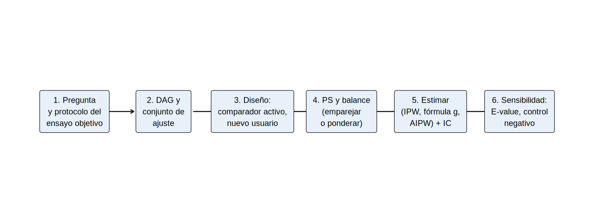

Dos decisiones de diseño que valen más que cualquier modelo
Los métodos de ajuste (PS, IPW, AIPW) corrigen lo medido. Pero el diseño puede reducir la confusión que no se mide. Dos decisiones, conocidas como el diseño de comparador activo y nuevo usuario (active comparator, new-user design), son las más eficaces:
Comparador activo: comparar el fármaco de interés con otro fármaco para la misma indicación, en vez de con “no tratar”.
Nuevo usuario: incluir solo a pacientes que inician el tratamiento durante el estudio, excluyendo a los usuarios prevalentes (10.5).
Por qué un comparador activo reduce la confusión
Quien no recibe ningún tratamiento difiere mucho de quien lo recibe: puede estar demasiado frágil, con contraindicaciones, con menos acceso. Entre dos pacientes que reciben un fármaco para la misma indicación, las razones de la prescripción son más parecidas.
En nuestra simulación, la fragilidad reduce la probabilidad de recibir el iSGLT2 cuando el comparador es “nada” (coeficiente −0.70). Con un comparador activo (por ejemplo, un iDPP4, también para diabetes), la fragilidad influye mucho menos en la elección (coeficiente −0.15):
library(tidyverse)source("R/funciones_epi.R")source("R/simular_ckd.R")x<-"I(edad / 10) + sexo + hba1c + pas + tfg_basal + luacr + ecv"preparar<-function(d)d|>mutate(sexo =factor(sexo, levels =c("Mujer", "Hombre")), luacr =log(uacr))## Escenario A: comparador = no tratar (fragilidad pesa -0.70 en la decisión)a<-preparar(simular_ckd(peso_fragilidad =0.70))## Escenario B: comparador activo (fragilidad pesa -0.15 en la decisión)b<-preparar(simular_ckd(peso_fragilidad =0.15))ate_v<-mean(a$ite)# mismos resultados potenciales: la verdad no cambiac(ATE_verdadero =ate_v)
ATE_verdadero
0.927542
Medimos el sesgo de cada análisis (crudo y ajustado por IPW) en ambos escenarios:
El desbalance de la fragilidad entre grupos (DEM) baja de −0.78 a −0.30.
El sesgo del estimador crudo baja de +0.57 a +0.25.
El sesgo del estimador ajustado baja de +0.41 a +0.10.
El comparador activo no elimina el sesgo, pero lo reduce 4 veces, sin medir nada más. Es una forma de diseñar la comparabilidad.
Advertencia⚠️ Lo que cambia con un comparador activo
El estimando es el efecto relativo al comparador (iSGLT2 vs. iDPP4), no vs. nada. Si el comparador tiene efecto propio (beneficio o daño), se mezcla.
Requiere que existan ambos fármacos con indicación compartida (si no hay un comparador razonable, no se puede).
Equipoise clínico: los médicos deben considerar ambos fármacos como opciones, no uno como “último recurso”.
Diseño de nuevo usuario con datos de dispensación
Un nuevo usuario es quien inicia el fármaco sin haberlo usado en una ventana previa (el periodo de lavado, típicamente 6-12 meses). El tiempo cero es la fecha del primer despacho (índice). Se construye así con código:
## Datos hipotéticos de dispensaciones de dos fármacos (cada fila = un despacho)set.seed(42)disp<-tibble( id =rep(1:12, times =c(3, 1, 2, 4, 1, 2, 3, 1, 2, 1, 3, 2)), farmaco =sample(c("iSGLT2", "iDPP4"), 25, replace =TRUE), fecha =as.Date("2022-01-01")+sample(0:700, 25))|>arrange(id, fecha)inicio_observacion<-as.Date("2022-01-01")nuevos_usuarios<-function(disp, lavado_dias=180, inicio_obs, fin_inclusion){disp|>group_by(id)|>arrange(fecha, .by_group =TRUE)|>slice(1)|># primer despacho de cualquiera de los dosungroup()|>filter(fecha>=inicio_obs+lavado_dias, # al menos 'lavado' de observación sin ningunofecha<=fin_inclusion)|>transmute(id, fecha_indice =fecha, estrategia =farmaco)}indice<-nuevos_usuarios(disp, lavado_dias =180, inicio_obs =inicio_observacion, fin_inclusion =as.Date("2023-06-30"))indice
# A tibble: 2 × 2
estrategia n
<chr> <int>
1 iDPP4 4
2 iSGLT2 5
Cada paciente entra una vez, en la fecha de su primer despacho, con su estrategia; ese día es el tiempo cero. Después se construyen los confusores medidos antes de esa fecha y se siguen los desenlaces a partir de ella. Un paciente con despachos previos durante el lavado (usuario prevalente) no entra.
Tip💡 Reglas del diseño de nuevo usuario
Define una ventana de lavado sin exposición a ninguno de los fármacos comparados.
El tiempo cero es la fecha índice del primer despacho.
Mide los confusores antes del tiempo cero (nunca después: serían mediadores).
Incluye una sola vez a cada paciente (primer inicio) o usa ensayos anidados si puede iniciar en distintos momentos.
Analiza desde el inicio (no desde que ya llevan meses tomándolo).
Define el seguimiento (ITT: sin importar si cambian de fármaco; o per protocol con censura y ponderación, Cap. 19).
Resumen del Cap. 12: el flujo de un análisis observacional

Importante🎯 En resumen
El comparador activo reduce la confusión por indicación por diseño: en nuestra simulación, el sesgo ajustado baja de +0.41 a +0.10.
El nuevo usuario (con lavado y tiempo cero en el primer despacho) evita el sesgo de prevalentes y el de tiempo inmortal.
El diseño (qué comparar, a quién incluir y cuándo empezar) vale más que el modelo estadístico.
Con peso_fragilidad = 0.15, calcula el E-value del RR ajustado. ¿Es menor o mayor que con 0.70? ¿Qué implica?
Modifica nuevos_usuarios() para un lavado de 365 días. ¿Cuántos pacientes quedan?
Propón un comparador activo creíble para estudiar el efecto de un fármaco para la hiperkalemia sobre la mortalidad. ¿Qué indicación comparte?
Nota editorial
Capítulo redactado con asistencia de IA y revisado por el autor. Todos los datos son simulados o hipotéticos; los escenarios clínicos son ilustrativos.